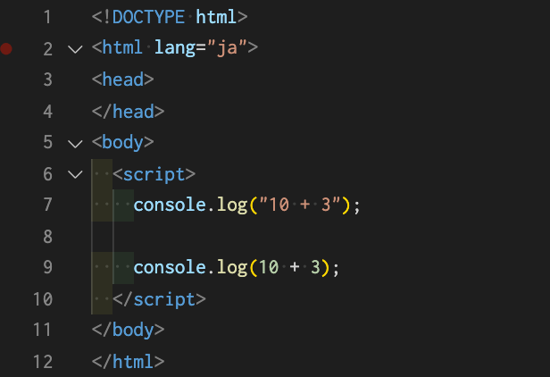
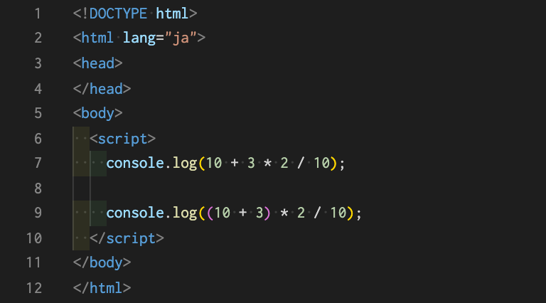
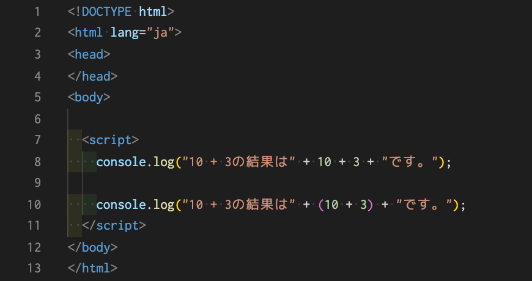

そのため、「"10 + 3"」と「10 + 3」では表示結果が違います。 試しに下記の記述を行い、コンソールで確認してみてください。
皆さんのコンソールには「10 + 3」と「13」が表示されているはずです。 7行目の場合だと「"10 + 3"」という文字列をconsole.log()でコンソール上に表示せよというプログラムになっており、 9行目の場合だと「10 + 3」は数字だと認識され、単純に10 + 3した結果をconsole.log()でコンソール上に表示せよというプログラムになっております。 このようにクォーテーションマークで囲うかどうかでコンピューター側がデータ型を判別しています。
では、下記のように記述をしてコンソールで確認してみてください。
7行目と9行目ではまた表示されている値が違うはずです。 これは数学と同じ考え方で計算が行われているためです。7行目のプログラムでは足し算よりも掛け算や割り算の方が優先されて計算されています。順番で言うと、「3 * 2 / 10 + 10」という順番で計算を行っております。 そして、9行目のプログラムでは「(10 + 3)」に（）が付いている為、足し算が優先されています。順番で言うと式通りになりますが、「(10 + 3) * 2 / 10」という計算順になっています。
では、下記のように記述をし、コンソールで確認してみてください。
こちらも7行目と9行目の結果が違うと思います。 7行目に関しては、まず"10 + 3の結果は"という文字列に対して、10という数字がその文字列の語尾に連結されています。 その為"10 + 3の結果は10"という文字列が生成され、次は3という数字がその生成された文字列の語尾に連結されて"10 + 3の結果は103"という文字列が出来ています。 そして最後に"です"がまた語尾に連結されたことによって"10 + 3の結果は103です"という文字列が最終的にコンソール上に表示されています。 一方、9行目では先ほどの算術演算子で紹介した方法を使用しております。"(10 + 3)"に（）を付けることで優先度を上げているということです。 つまり「"10 + 3の結果は" + 13 + "です"」としてから文字列が連結される為、結果として"10 + 3の結果は13です"とコンソール上に表示されたということになります。